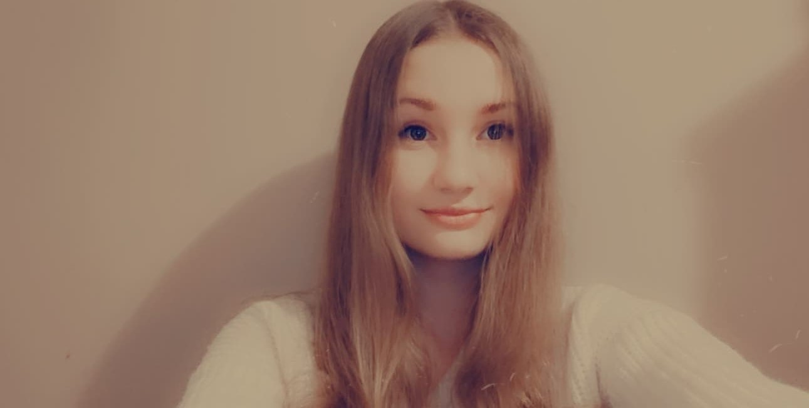

Na zakładce O nas, w której możesz bliżej Nas poznać!
Witajcie! Dziś chcielibyśmy pokazać Wam jak, gdzie i skąd pojawiło się "JużDziś!". Jak wiadomo aby narodził się pomysł, musi zaistnieć potrzeba jego stworzenia. W naszym przypadku była ona prosta - Znaleźliśmy niszę która nie jest zaspokojona.
Otóż na naszej, rodzinnej scenie e-edukacyjnej brakuje prostej, intuicyjnej w użytku i szeroko dostępnej platformy z równie intuicyjnymi i stworzonymi w dobry sposób kursami, wykładami, czy też prelekcjami.
Z tym przyświecającym Nam pomysłem, przystąpiliśmy do rozmowy na temat tego, jakie istnieją sposoby na jego rozwiązanie.Wtem doszła do nas myśl, iż idea rozwiązania naszego problemu może nadejść równie łatwo, jak jego powstanie.
Zdawaliśmy sobie sprawę jednak, że nie wystarczy mieć tylko prostego rozwiązania.Cały plan okazywał się coraz bardziej skomplikowany im bardziej się w niego zagłębialiśmy. Jak to często się mówi - „Apetyt rośnie w miarę jedzenia.”Sam projekt wymagał od nas bardzo dużego zaangażowania i ciężkiej pracy. Dniami siedzieliśmy uzgadniając kwestie odnoszące się do kolejnych i kolejnych spraw.. natomiast wieczorami następował czas na ich wykonanie aby uzgadniać następne kwestie po szkole dnia kolejnego.
Tak też po zdaniu sobie sprawy z ogromu prac, kilkukrotnie mieliśmy chwile zwątpienia. Bardzo mało brakowało, aby JużDziś! Nigdy nie ujrzało, cóż, swojego dnia.Jednak, na całe tak Nasze, jak i Wasze szczęście rozłam w naszym zespole nie miał miejsca. Tak więc teraz krok po kroku przejdziemy przez wszystkie etapy, przez które musieliśmy przejść aby JużDziś! powstało.
Na samym początku potrzebowaliśmy pomocy w tworzeniu JużDziś! W szkole dowiedzieliśmy się o Zwolnieni z Teorii, z pomocą których tworzony jest ten projekt.Działo się, musieliśmy wymienić cały zespół, zwinąć biuro i pracować zdalnie, a nawet zrezygnować na chwilę z JużDziś! i zaangażować się w inne projekty.
Jako kilku-osobowy zespół z zerowym doświadczeniem w biznesie, marketingu czy sprzedaży byliśmy skazani na.., cóż, porażkę.Wtedy na szczęście nie byliśmy tego świadomi :),
Nie mając żadnego doświadczenia i inwestując prawie zerowe kwoty (nie licząc tysięcy godzin naszego prywatnego czasu) udało nam się doprowadzić do uruchomienia portalu.
W okolicach października 2020 roku zaczęliśmy rozglądać się za inwestorem. Mieliśmy wrażenie, że pieniądze rozwiążą wszystkie nasze problemy i portal auto-magicznie (sic!) sam zacznie się rozwijać. Po czasie zrozumieliśmy, że to nie pieniędzy nam brakowało tylko wiedzy i doświadczenia. Zamiast uczyć jak prowadzić biznes, jak wygląda nasz rynek, jakie problemy mają nasi klienci i jak chcemy je rozwiązać skupiliśmy się na szukaniu finansowania co skutecznie odciągało naszą uwagę o sednie przedsiębiorczości. Teraz wiemy, że pieniądze niewiele pomogą jeśli nie masz poukładanych podstawowych aspektów jak zespół, itd.
Dawid to współtwórca naszej platformy. Jest to bardzo odpowiedzialna osoba, zawsze wywiązuje się ze swoich zadań i chętnie zagłębia swoją wiedzę. Ma swoje pasje i spełnia się w nich. Ale też myśli o innych i potrafi poprawić humor każdemu.
Klaudia jest to bardzo miła oraz bardzo uczynna dziewczyna która za wszelką cenę chce pomóc innym. Bardzo się stara aby wszystko wyszło w tym projekcie najlepiej jak się tylko da. Poświęca cały swój wolny czas projektowi oraz myśli co może zrobić aby było tylko lepiej.
